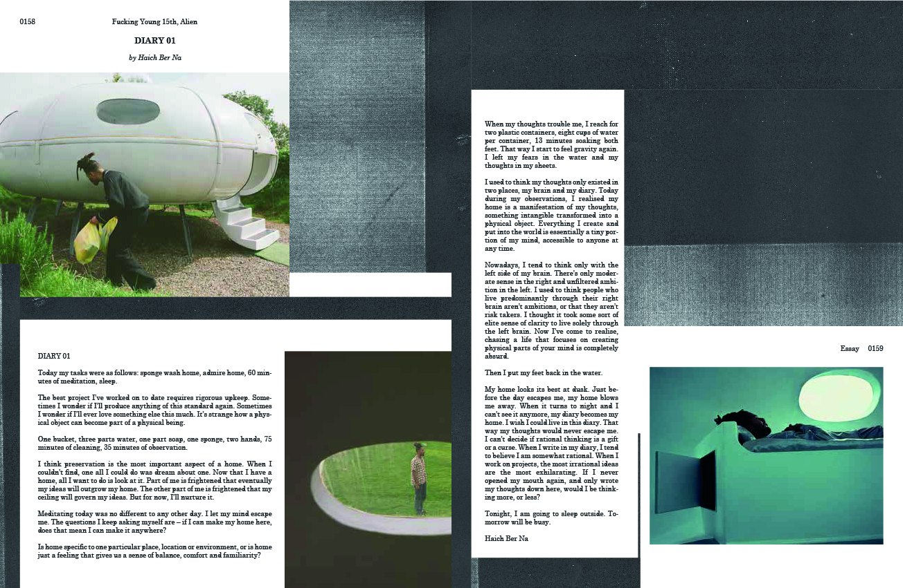
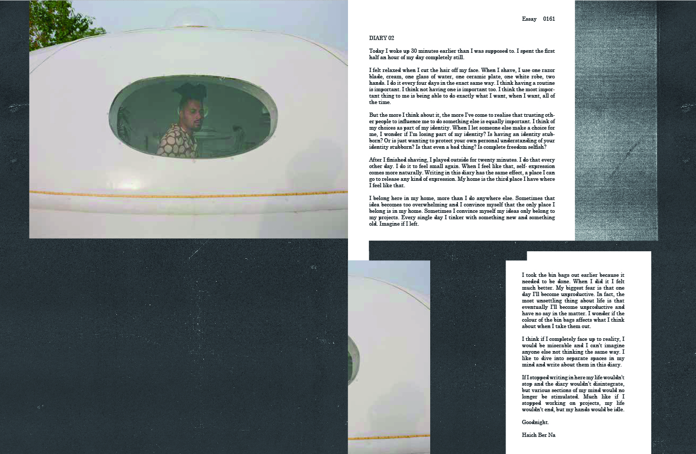

Project
Everywhere's HomeYear
2019Client
Haich Ber NaDiscipline
Moving image, book designA pseudo-documentary directed, shot and edited for Haich Be Na's concept EP 'Everywhere's Home'. The film follows the unnamed character as he maintains his spaceship home. As part of this project, I created two double page spread designs for Fucking Young magazine.
Photography: Jesse Crankson



